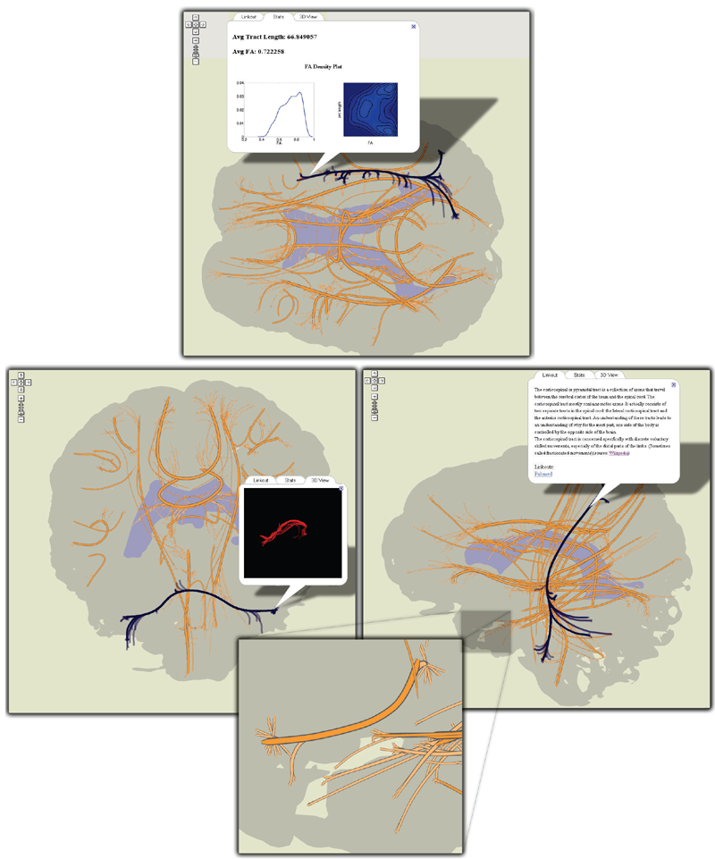

|
White matter structures in the brain projected onto the sagittal, coronal and transverse planes, displayed using Google Maps. Major white matter fiber bundles are represented schematically by their centroid fiber; individual fibers in bundles are linked from the centroid bundle to their projected end points. Zooming in allows access to smaller clusters of fibers. Bundles can be selected and pre-computed statistical data along with 3D views of the fiber bundle (“brain view”) can be displayed. |